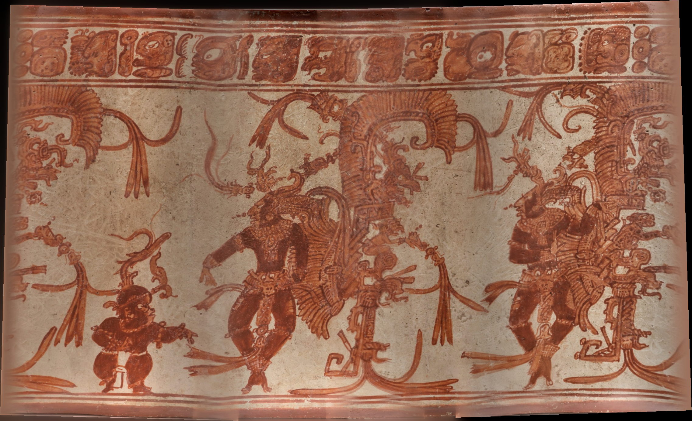
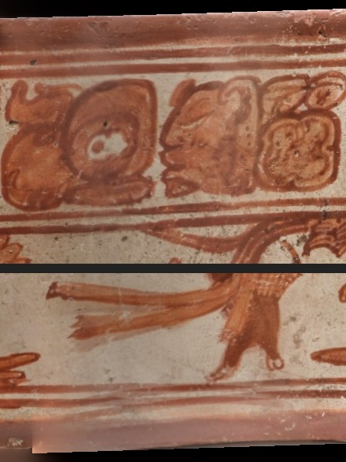
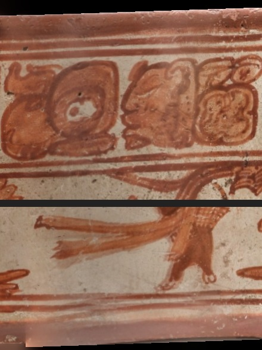
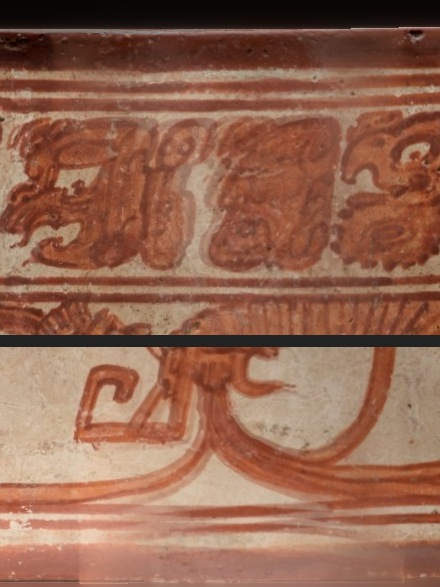
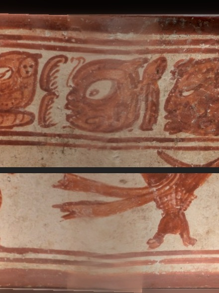
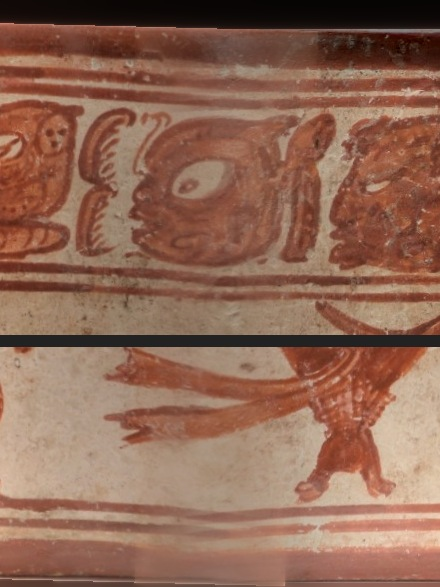

Both panoramas were returned by the app’s Hugging Face Space before Refine. The inputs were the same four stills of LACMA 168693, in the same order, with the shipped Map and identical 8–92% crops and 12% feathering. The second arm adds a vertical warp bounded to 3% of each strip’s height and tapers it to zero at the top and bottom. LACMA collection record

Pixel distances on the returned panoramas. Each strip’s placement was recovered by matching it to the corresponding blended panorama. The same shared landmarks were then projected from both contributing strips to estimate the misregistration at each join.
| Views | Landmarks | Median px Current → corrected | 90th percentile px Current → corrected |
|---|---|---|---|
| 1–2 | 474 | 3.18 → 1.83 | 8.18 → 6.20 |
| 2–3 | 814 | 3.65 → 2.28 | 9.33 → 6.32 |
| 3–4 | 55 | 2.47 → 2.07 | 4.86 → 4.40 |
The correction reduced the overlap error in all three joins. In the full panoramas the change is subtle. Exposure changes and the remaining bottom-border steps are still visible. The default 14–86% crop failed in both arms. A local replay of the Space’s matcher put the 3–4 pair below its 10% inlier threshold at that crop.
Each close-up shows the upper and lower painted bands near the center of the corresponding overlap. The crops use the same pixel scale.





Before stitching, spatial holdout error across 1,464 overlap landmarks fell from 0.274% to 0.148% of strip height. The estimate in the table uses the returned mosaics and includes landmarks used in the final correction. It measures geometric agreement and leaves exposure or blending differences for visual inspection. The comparison covers one vessel. Production code was untouched.
Seam metrics · Correction and preflight metrics · Hugging Face Space